Photography & Composition
Studies in lighting falloff, geometric framing, and atmosphere captured across architectural and live event environments. Visual direction and photography shape how I compose scenes, balance camera angles, and build environmental storytelling in games.
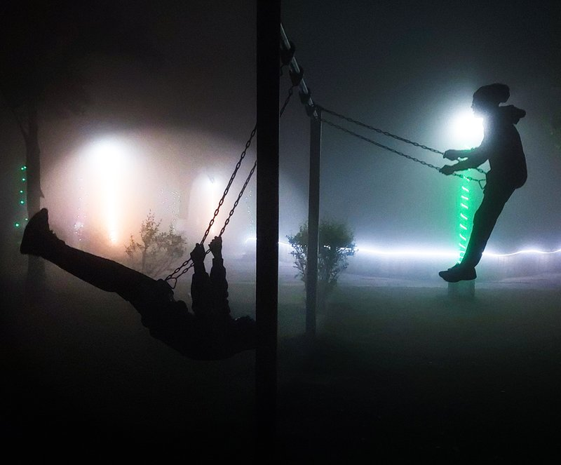
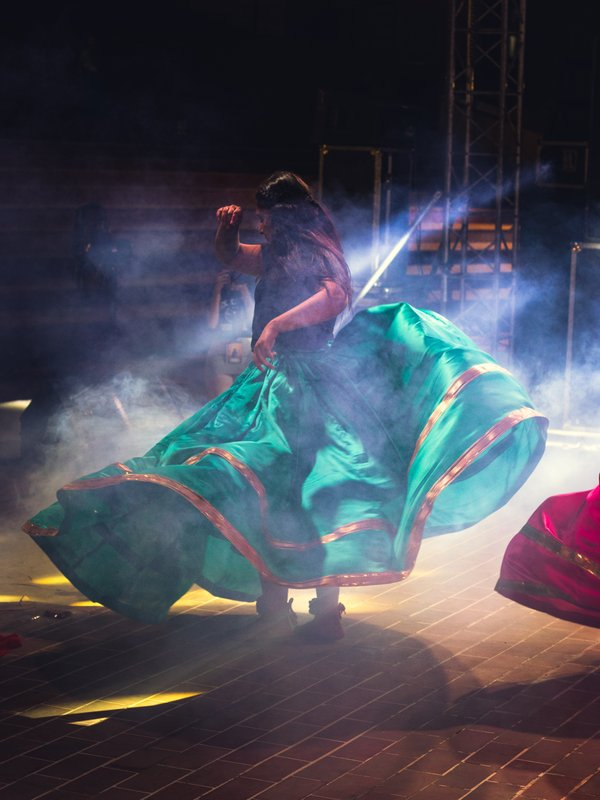
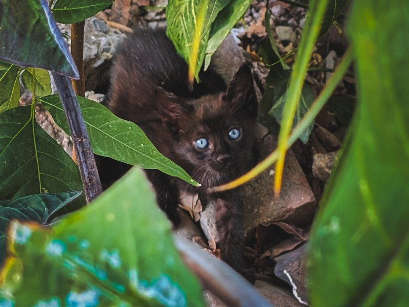
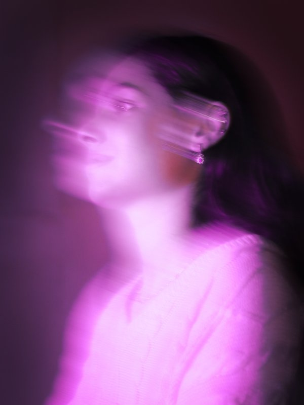
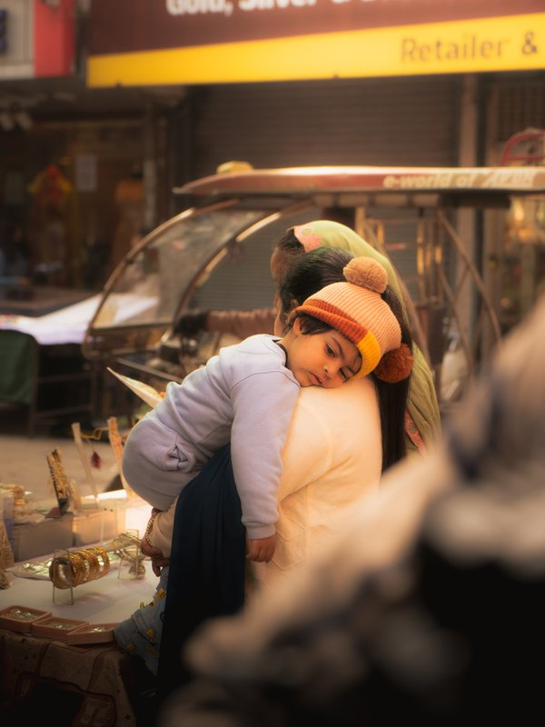
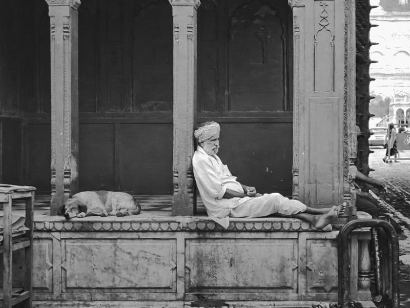
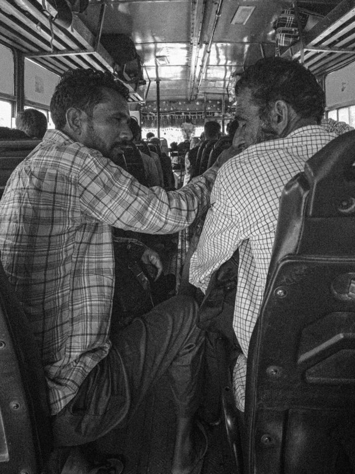
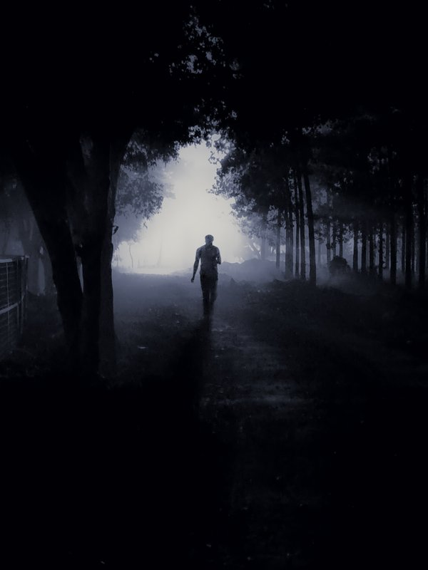
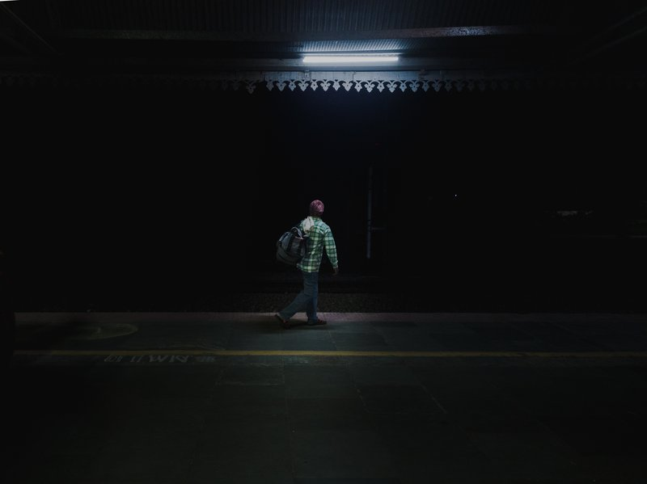
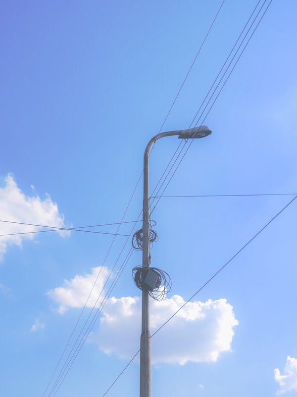
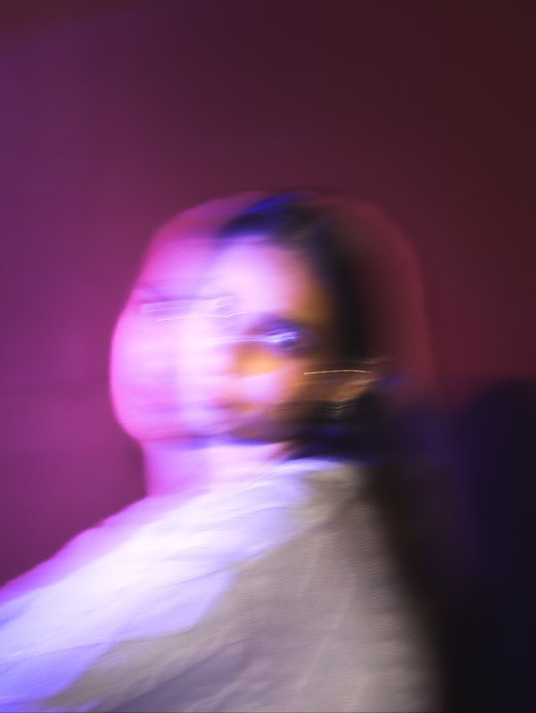
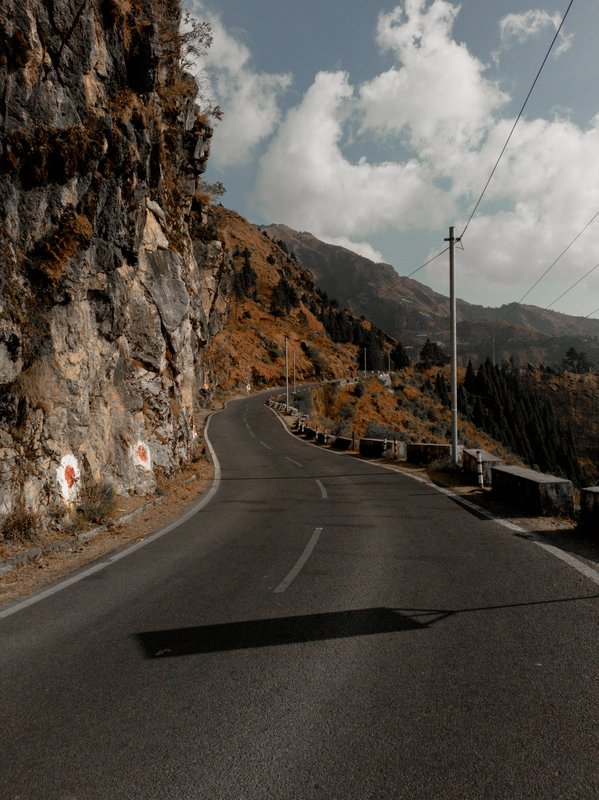
02 / VISUAL REELS & CINEMATICS
Cinematics & Event Media
Short highlights and composition studies filmed and edited by Sahil.
▶
16:9 EVENT CINEMATIC (Drop .mp4 in assets/videos or paste embed URL)
Society Event Highlights (6,000+ Attendees)
Aftermovie compilation capturing live festival performances, crowd reactions, and ambient lighting.
▶
16:9 VISUAL SHOWREEL (Drop .mp4 in assets/videos or paste embed URL)
Visual Composition & Color Grading Reel
Framing studies, camera motion tracking, and color grading profiles.